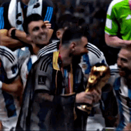

Argentina
Selección de Argentina: Historial Mundialista

- Títulos: Campeón en casa 1978, México 1986 y Catar 2022.
- Finales Perdidas: Subcampeón en Uruguay 1930, Italia 1990 y Brasil 2014.
- Ausencias: La selección no participó en 1938, 1950, 1954 (decisión política) y no clasificó para México 1970.
- Rendimiento: Es uno de los equipos con más participaciones consecutivas y finales disputadas, situándose detrás de Brasil y Alemania en éxito histórico.